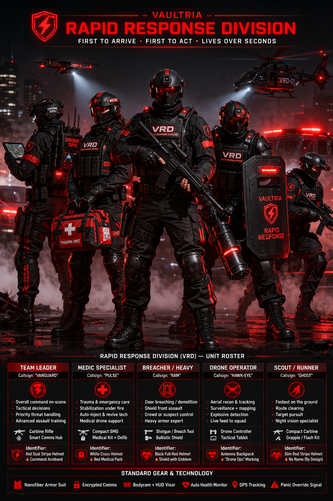

Defense & enforcement · Emergency response
VAULTRIA Rapid Response Division (VRD)
First line between chaos and control — sub-60-second posture where infrastructure allows. Bridges civilians to Enforcers and heavier arms. Reports through Custodian of Order; dispatch ties to Vaultryn / Aegis. CV / TV and honors below.
VRD squad overview

Motto
First to arrive. First to act. Lives over seconds.
Core purpose
- Arrive in under 60 seconds where grid and roads allow
- Assess threat level immediately; stabilize before escalation
- Bridge the gap between routine incidents and Enforcers / military — the decision point between “normal” and full tactical deployment
Command structure
VRD Command Director
Reports to the Custodian of Order — national VRD posture, deploy authority, AI dispatch integration.
Central Dispatch Command (CDC)
AI + human hybrid — assigns teams in real time. Roles: dispatch controllers, threat analysts, live-feed coordinators.
Sector response commanders
Per Vault Zone or theater — escalation decisions and resource stacking.
Unit team leaders (field)
On-scene command for each deployed squad — final tactical authority until relieved.
Standard field unit (5–6 operatives)
- Team Leader — “Vanguard” Command, HQ comms, escalation calls (police → Enforcers → military).
- Tactical Officer — “Dagger” Armed suspects, perimeter, team protection.
- Medic Specialist — “Pulse” Trauma, stabilization, evacuation coordination.
- Breacher / Heavy — “Ram” Entry, shield line, heavy armor.
- Drone Operator — “Hawk-Eye” Aerial recon, live feed, threat detection.
- Scout / Runner — “Ghost” Route clearing, pursuit, night recon — often first boots on ground.
Specialized support (attach as needed)
- Rapid Riders — bikes, traffic bypass, first-wave urban arrival
- Air Response Unit — helicopters / heavy drones; medevac and overwatch
- Autonomous support — AI-delivered med kits, surveillance drones, staged backup (see Autonomous Defense)
Rank structure (VRD-specific)
Top: VRD Director
Command: Senior Response Commander · Response Commander
Field: Team Leader · Senior Operative
Operative: Tactical Officer · Medic · Drone Operator · Scout (by billet)
Entry: Cadet (training)
Operation flow
Example timeline
- Panic or alert signal
- AI verifies and ranks threat
- Closest VRD unit dispatched
- Drone may arrive first (5–10 sec)
- VRD team target ≤60 sec
On scene
Scout maps → Drone feeds → Team Leader decides → Tactical secures → Medic treats.
Escalation
- Low — VRD contains
- Medium — Enforcers
- High — military / joint packages
Threat routing (summary)
| Threat level | Primary unit |
|---|---|
| Low | Police |
| Medium | VRD |
| High | Enforcers |
| Extreme | Military / joint |
Gear & identity
Uniform: black base, red identifiers — medic cross, drone ops markings, leader armband, breacher shield branding.
Standard kit: nanofiber armor, encrypted comms, bodycam + HUD visor, auto health monitor, GPS, panic override signal.
Tech: AI-assisted targeting where issued; live feed to CDC; integration with city surveillance feeds.
Rules of engagement (core)
- Save lives first
- Neutralize threat second
- Minimize collateral damage
- Obey chain of command
- Report everything — audit-ready
What makes VRD unique
Speed + intelligence + precision — first line before everything escalates; a desired identity, not just a job title.
Service benefits
Elite covenant — rapid response
You are the first line between chaos and control.
1. Status
Top-tier protectors — public respect similar to lifesavers. When VRD arrives, the narrative is under control.
2. Trust & access
Higher baseline Trust Vyr (TV); yellow and some red zones; faster checkpoints.
3. Finance
- Core Vyr (CV) above police and line military
- Bonuses: response speed, lives saved, critical-risk missions
- Long-term: pension, family security, elite investment programs where chartered
4. System priority
Alerts surface high in Vaultryn dispatch — immediate support when operators are in danger.
5. Lifestyle
Premium housing options, faster healthcare, reserved transport lanes where policy allows.
6. Technology
Latest kit rotation — AI helmets, smart weapons, drones; direct interface with national surveillance fusion (lawful, cleared).
7. Training
Combat + de-escalation, emergency medicine, AI-assisted decisions, resilience — portable skills outside VRD.
8. Family
Enhanced monitoring (protective), priority emergency response; escalation if an operator is targeted.
9. Career
Fast promotion; pathways to Enforcers, VIB, Obsidian Guard, Core Council advisory tracks.
10. Honors
First Light Medal (speed), Aegis Honor (life save), Zero Loss Commendation — public + system reputation for top operatives.
11. Psychology
Purpose, adrenaline, real-time need — you matter in real time.
Trade-offs
- High stress, constant readiness
- Injury and death on bad days
- Mental load — benefits feel earned, not gifted
Open doctrine choices
Retirement vs long bind: normal retirement with pension, or extended contract elite lock-in — the stricter the contract, the more “lifers” and the more intense the cult of the unit.
Police override: VRD may assume scene command when threat tier and charter trigger — or must coordinate through police incident command. Full override increases power and friction; coordination preserves civil police legitimacy.
Next design layers
- Recruitment trials and elimination pipeline
- Psych screening canon
- Dispatch dashboard UI (operations center)
- Badge / insignia system per role